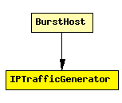

File: Applications/Generic/IPTrafficGenerator.ned
Prototype for modules that generate traffic directly over IP.
See also: IPTrafGen, IPTrafSink
The following diagram shows usage relationships between modules, networks and channels. Unresolved module (and channel) types are missing from the diagram. Click here to see the full picture.
If a module type shows up more than once, that means it has been defined in more than one NED file.
| BurstHost | Definition of an IP node with a transport generator that connects to IP directly, without TCP or UDP. |
| Name | Direction | Description |
|---|---|---|
| from_ip | input | |
| from_ipv6 | input | |
| to_ip | output | |
| to_ipv6 | output |
simple IPTrafficGenerator gates: in: from_ip, from_ipv6; out: to_ip, to_ipv6; endsimple